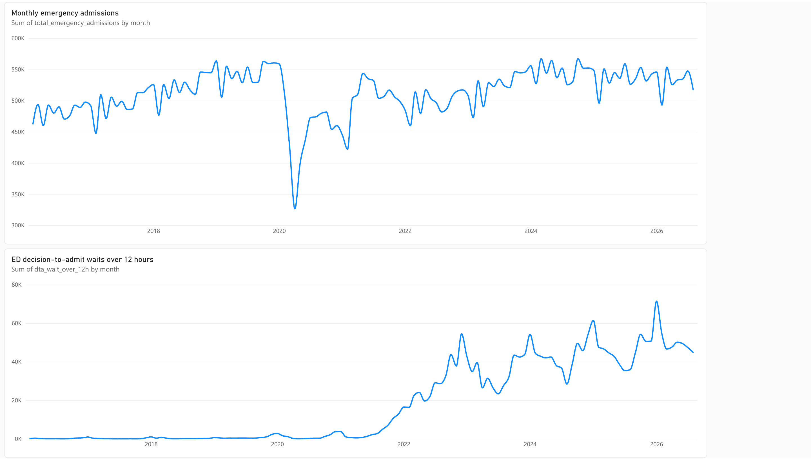
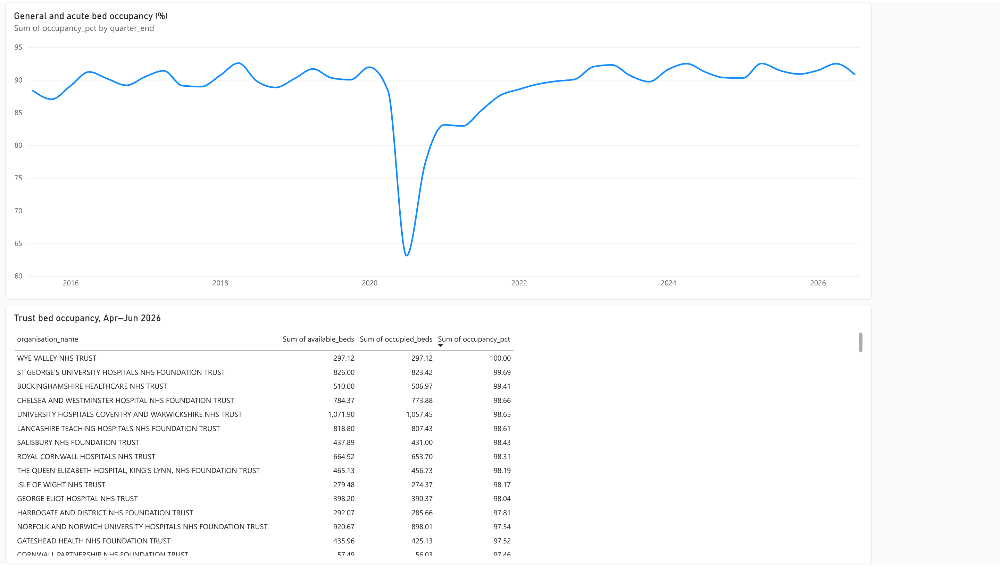
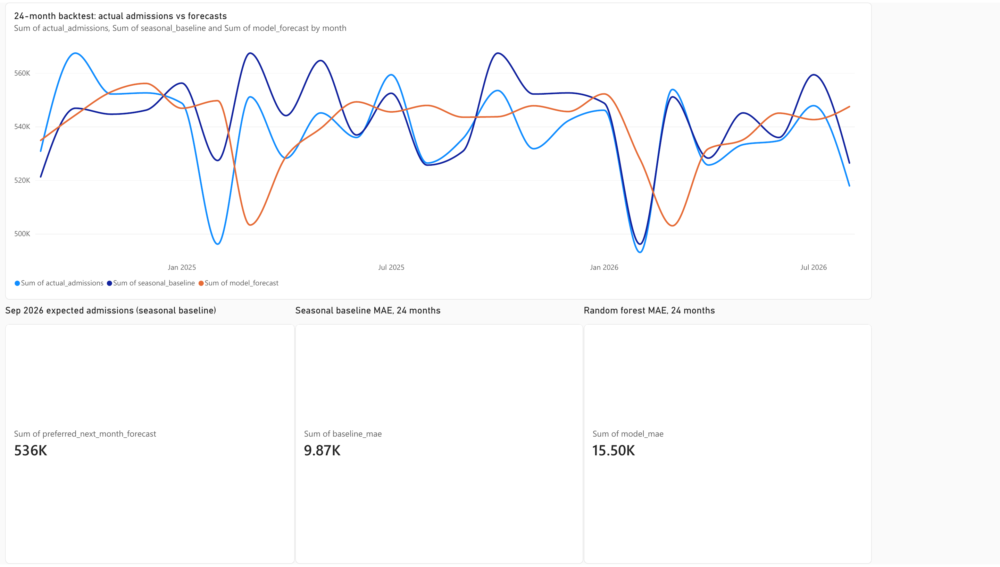

HEALTHCARE ANALYTICS · A PROJECT BY TARIK ALANSARI
Hospital Patient Flow
& Capacity Analytics
I built a dashboard to show how busy hospitals are: how many emergency patients are admitted, how long some wait, and how many beds are in use. I also tested ways to estimate next month’s admissions.
August 2026
August 2026
April–June 2026
WHAT I BUILT
Three questions. One clear report.
The report uses public totals from NHS England, not individual patient records. Here is what each part tells you:
- 01
How many patients are admitted?
An admission means someone is taken into hospital for care—not simply that they visited the emergency department. The report tracks these totals each month.
- 02
How full are the beds?
Bed occupancy means the share of available beds being used. Around 91% means roughly 91 out of every 100 general-and-acute overnight beds were occupied, on average.
- 03
Can we estimate next month?
I compare two methods for predicting the number of admissions, then check how far each prediction was from the actual total.
THE REPORT
See the hospital numbers over time.
Tap a screenshot to view it larger.

How many people need care?
See emergency hospital admissions each month and how many patients waited over 12 hours after staff decided to admit them. This is not the total time spent in the emergency department.
See bed use & next-month predictions

How full are the beds?
See how bed use changes over time and compare the latest figures across 153 NHS trusts—organisations that run hospital services.

How close were the predictions?
Compare each predicted monthly admission total with what actually happened. A smaller gap means a more accurate prediction.
Data, methods & sources
How I built it
I collected public NHS spreadsheets, checked the source files, and organized the data in SQLite. SQL and Python support the analysis and prediction tests; Power BI presents the findings.
Published aggregate data
Monthly emergency demand covers February 2016–August 2026. Overnight bed data covers 45 quarters from June 2015–June 2026. The latest trust snapshot is April–June 2026. Source URLs and file hashes are pinned so the analysis can be reproduced.
A fair forecast comparison
The random forest uses calendar features and admissions from previous months. It is compared with a seasonal baseline over September 2024–August 2026, updating one month ahead using observed prior admissions. Mean absolute error is 9,874.21 admissions per month for the baseline and 15,501.42 for the random forest.
The preferred baseline forecast was 535,580 admissions for September 2026, using information through August 2026. This is a historical forecast from that point in time.
What the measures mean
Long waits count patients crossing a threshold after the decision to admit. Bed occupancy is average occupied overnight beds divided by average available beds. These figures do not measure an individual patient’s waiting time or length of stay.
The admissions and bed datasets cover different organisations and time periods. They are displayed separately. Changes in reporting and provider coverage need care when comparing trends.
Uses public hospital totals, not individual patient records. Admissions and bed figures cover different reporting periods. This project analyzes demand; it does not show that care or waiting times improved.